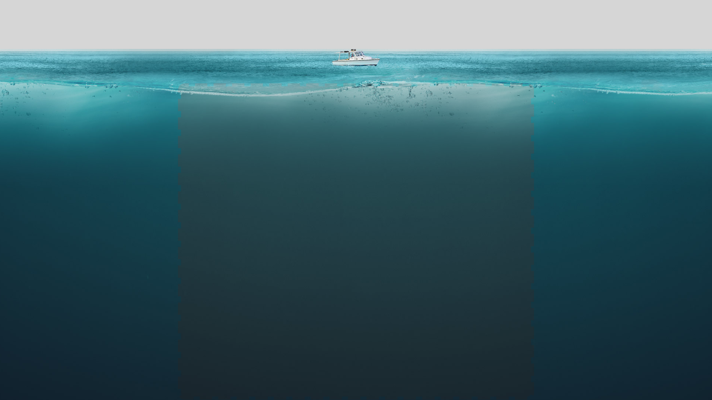
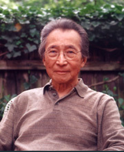

知名校友
后弦
男，原名邓文彬，毕业于广西大学物理学专业。现为歌手兼词曲创作人，后弦在大学时就对音乐有浓厚的兴趣，并在大学期间组织了B2B和声组合、HBH四人青春组合、短路乐队等音乐组合进行演出。在1999年接触到MIDI后开始创作原创歌曲，不久，后弦就凭借自己的原创歌曲在广西地区获奖并积攒了人气。2005年，后弦签约东升国际传媒，发行首张全创作专辑《古玩》正式出道，该专辑在两个月内销量突破十万张，凭借此专辑，后弦获得了《亚太音乐榜》“最具人气新人奖”，此后后弦还发表了不少歌曲，于2009年发表的《娃娃脸》和《你还欠我一个拥抱》两首歌曲爆红网络，成为热门歌曲，常常占据歌曲榜单首位，后弦也因此被更多人熟知，人气大增，成为许多人的偶像。此后后弦不忘初心，一直专注于原创歌曲的创作，推出了不少好的作品。在广西大学九十周年校庆的晚会上，后弦也带来了精彩的表演。

周文中
男，华裔美国作曲家，毕业于广西大学，1946年赴美国，入新英格兰音乐学院学习作曲，1949年入哥伦比亚大学，学习音乐学和作曲，并取得音乐硕士学位，2004年9月，周文中被中国中央音乐学院授予名誉教授称号。周文中的主要作品有《山水》、《花月正春风》、《花落知多少》等，其中管弦乐作品《梦里花落知多少》震撼乐坛，荣获多项奖项。周文中虽然入了美国籍，但40年代以来一直致力于中西方文化的融合，他的作品将中国的诗词、传统与西方的音乐理论、技巧融为一体，既有西方的特点又有东方的情调，内涵丰富。不仅如此，周文中还一直不遗余力的推动国际艺术交流，他说，“东西方文化的活跃历史悠久，几千年间有过多次的此消彼长。如果双方能够互相了解，‘几何线'和‘美术线'互相认识，那两者的文化都会有很大的发展”，老人的话语中透露出对中西方文化的交流与发展的信心。
两位校友在音乐和艺术上的坚持精神值得我们学习，是我们的好榜样。